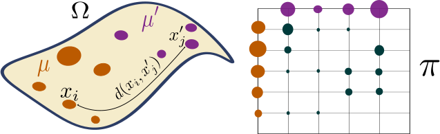
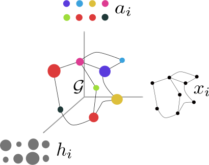

Optimal Transport for Structured Data
This section covers my works related to Optimal Transport distances for structured data such as graphs. In order to compare graphs, we have introduced the Fused Gromov Wasserstein distance that interpolates between Wasserstein distance between node feature distributions and Gromov-Wasserstein distance between structures.
Note. This work was part of Titouan Vayer’s PhD thesis. We were co-supervising Titouan together with Laetitia Chapel and Nicolas Courty.
Here, we first introduce both Wasserstein and Gromov-Wasserstein distances and some of our results concerning computational considerations related to the latter.
Wasserstein and Gromov-Wasserstein distances
Let $\mu = \sum_i h_i \delta_{x_i}$ and $\mu’ = \sum_i h^\prime_i \delta_{x^\prime_i}$ be two discrete distributions lying in the same metric space $(\Omega, d)$. Then, the $p$-Wasserstein distance is defined as:
Note that the 2-Wasserstein distance is very similar in its formulation to the Dynamic Time Warping similarity presented in Sec. 1.2. The only difference lies in the constraints that are enforced in the optimization problems. For Wasserstein, a coupling needs to meet marginal constraints to be considered valid while for Dynamic Time Warping, a path shall (i) not break the order of the sequences at stake and (ii) enforce alignment of complete series (from beginning to end).
\begin{equation} W_p(\mu, \mu’) = \left( \min_{\pi \in \Pi(\mu, \mu^\prime)} \sum_{i,j} d(x_i, x^\prime_j)^p \pi_{i,j} \right)^{\frac{1}{p}} \label{eq:wass} \end{equation}
where $\Pi(\mu, \mu^\prime)$ is the set of all admissible couplings between $\mu$ and $\mu’$ (ie. the set of all matrices with marginals $h$ and $h’$).
This distance is illustrated in the following Figure:

When distributions $\mu$ and $\mu’$ do not lie in the same ambient space, however, one cannot compute their Wasserstein distance. An alternative that was introduced in (Mémoli, 2011) relies on matching intra-domain distances, as illustrated below:

The corresponding distance is the Gromov-Wasserstein distance, defined as:
\begin{equation} GW_p(\mu, \mu’) = \left( \min_{\pi \in \Pi(\mu, \mu^\prime)} \sum_{i,j,k,l} \left| d_\mu(x_i, x_k) - d_{\mu’}(x^\prime_j, x^\prime_l) \right|^p \pi_{i,j} \pi_{k,l} \right)^{\frac{1}{p}} \label{eq:gw} \end{equation}
where $d_\mu$ (resp. $d_{\mu’}$) is the metric associated to $\mathcal{X}$ (resp. $\mathcal{X}^\prime$), the space in which $\mu$ (resp. $\mu’$) lies.
Sliced Gromov-Wasserstein
Computational complexity associated to the optimization problem in Equation \eqref{eq:gw} is high in general. However, we have shown in (Vayer, Flamary, Tavenard, Chapel, & Courty, 2019) that in the mono-dimensional case, this problem can be seen as an instance of the Quadratic Assignment Problem (Koopmans & Beckmann, 1957). We have provided a closed form solution for this instance. In a nutshell, our solution consists in sorting mono-dimensional distributions and either matching elements from both distributions in order or in reverse order, leading to a $O(n \log n)$ algorithm that exactly solves this problem.
Based on this closed-form solution, we were able to introduce a Sliced Gromov-Wasserstein distance that, similarly to the Sliced Wasserstein distance (Rabin, Peyré, Delon, & Bernot, 2011), computes similarity between distributions through projections on random lines.
TODO: add a summary of Titouan’s last findings about GW when they are stabilized.
Fused Gromov-Wasserstein
Here, we focus on comparing structured data which combine a feature and a structure information. More formally, we consider undirected labeled graphs as tuples of the form $\mathcal{G}=(\mathcal{V},\mathcal{E},\ell_f,\ell_s)$ where $(\mathcal{V},\mathcal{E})$ are the set of vertices and edges of the graph. $\ell_f: \mathcal{V} \rightarrow \Omega_f$ is a labelling function which associates each vertex $v_{i} \in \mathcal{V}$ with a feature $a_{i}\stackrel{\text{def}}{=}\ell_f(v_{i})$ in some feature metric space $(\Omega_f,d)$. We will denote by feature information the set of all the features ${a_{i}}{i}$ of the graph. Similarly, $\ell_s: \mathcal{V} \rightarrow \Omega_s$ maps a vertex $v_i$ from the graph to its structure representation $x{i} \stackrel{\text{def}}{=} \ell_s(v_{i})$ in some structure space $(\Omega_s,C)$ specific to each graph. $C : \Omega_s \times \Omega_s \rightarrow \mathbb{R_{+}}$ is a symmetric application which aims at measuring the similarity between the nodes in the graph. Unlike the feature space however, $\Omega_s$ is implicit and in practice, knowing the similarity measure $C$ will be sufficient. With a slight abuse of notation, $C$ will be used in the following to denote both the structure similarity measure and the matrix that encodes this similarity between pairs of nodes in the graph ${C(i,k) = C(x_i, x_k)}{i,k}$. Depending on the context, $C$ can either encode the neighborhood information of the nodes, the edge information of the graph or more generally it can model a distance between the nodes such as the shortest path distance. When $C$ is a metric, such as the shortest-path distance, we naturally endow the structure with the metric space $(\Omega_s,C)$. We will denote by _structure information the set of all the structure embeddings ${x_{i}}i$ of the graph. We propose to enrich the previously described graph with a histogram which serves the purpose of signaling the relative importance of the vertices in the graph. To do so, we equip graph vertices with weights ${h{i}}_{i}$ that sum to $1$.
All in all, we define structured data as a tuple $\mathcal{S}=(\mathcal{G},h_{\mathcal{G}})$ where $\mathcal{G}$ is a graph as described previously and $h_{\mathcal{G}}$ is a function that associates a weight to each vertex. This definition allows the graph to be represented by a fully supported probability measure over the product space feature/structure $\mu= \sum_{i=1}^{n} h_{i} \delta_{(x_{i},a_{i})}$ which describes the entire structured data:

Distance definition and properties
Let $\mathcal{G}$ and $\mathcal{G}’$ be two graphs, described respectively by their probability measure $\mu= \sum_{i=1}^{n} h_{i} \delta_{(x_{i},a_{i})}$ and $\mu’ = \sum_{i=1}^{m} h^\prime_i \delta_{(x^\prime_i,a^\prime_i)}$. Their structure matrices are denoted $C$ and $C’$, respectively.
We define a novel Optimal Transport discrepancy called the Fused Gromov-Wasserstein distance. It is defined, for a trade-off parameter $\alpha \in [0,1]$, as
\begin{equation} \label{discretefgw} FGW_{q, \alpha} (\mu, \mu’) = \min_{\pi \in \Pi(\mu, \mu^\prime)} E_{q}(\mathcal{G}, \mathcal{G}’, \pi) \end{equation}
where $\pi$ is a transport map (i.e. it has marginals $h$ and $h’$) and
\begin{equation} E_{q}(\mathcal{G}, \mathcal{G}’, \pi) = \sum_{i,j,k,l} (1-\alpha) d(a_{i},a^\prime_j)^{q} +\alpha |C(i,k)-C’(j,l)|^{q} \pi_{i,j}\pi_{k,l} . \end{equation}
The FGW distance looks for the coupling $\pi$ between vertices of the graphs that minimizes the cost $E_{q}$ which is a linear combination of a cost $d(a_{i},a^\prime_j)$ of transporting one feature $a_{i}$ to a feature $a^\prime_j$ and a cost $|C(i,k)-C’(j,l)|$ of transporting pairs of nodes in each structure. As such, the optimal coupling tends to associate pairs of feature and structure points with similar distances within each structure pair and with similar features. As an important feature of FGW, by relying on a sum of (inter- and intra-)vertex-to-vertex distances, it can handle structured data with continuous attributed or discrete labeled nodes (depending on the definition of $d$) and can also be computed even if the graphs have different numbers of nodes.
We have shown in (Vayer, Chapel, Flamary, Tavenard, & Courty, 2019) that FGW retains the following properties:
- it defines a metric for $q=1$ and a semi-metric for $q >1$;
- varying $\alpha$ between 0 and 1 allows to interpolate between the Wasserstein distance between the features and the Gromov-Wasserstein distance between the structures;
We also define a continuous counterpart for FGW which comes with a concentration inequality in (Vayer, Chapel, Flamary, Tavenard, & Courty, 2019).
We have presented a Conditional Gradient algorithm for optimization on the above-defined loss. We have also exposed a Block Coordinate Descent algorithm to compute graph barycenters w.r.t. FGW.
Results
We show that FGW allows to extract meaningful barycenters:
Note. The code provided here uses integration of FGW provided by the Python Optimal Transport (POT) toolbox.
```python tags=[“hide_input”] import numpy as np import networkx as nx import matplotlib.pyplot as plt import matplotlib.colors as mcol from matplotlib import cm plt.ion()
def build_noisy_circular_graph(n_nodes, mu=0, sigma=0.3, with_noise=False, structure_noise=False, p=None): g = nx.Graph() g.add_nodes_from(range(n_nodes)) for i in range(n_nodes + 1): noise = np.random.normal(mu, sigma, 1)[0] val = np.sin(2 * i * np.pi / n_nodes) g.add_node(i, feature=val + noise if with_noise else val) g.add_edge(i, (i + 1) % (n_nodes + 1)) if structure_noise: randomint = np.random.randint(0, p) if randomint == 0: if i <= n_nodes - 3: g.add_edge(i, i + 2) elif i == n_nodes - 2: g.add_edge(i, 0) elif i == n_nodes - 1: g.add_edge(i, 1) return g
def sp_to_adjacency(C, threshold=1.8): new_adj = np.zeros_like(C) new_adj[C <= threshold] = 1. np.fill_diagonal(new_adj, 0.) return new_adj
def graph_colors(g, vmin=0, vmax=7): cnorm = mcol.Normalize(vmin=vmin,vmax=vmax) cpick = cm.ScalarMappable(norm=cnorm,cmap=’viridis’) cpick.set_array([]) val_map = {} for k, v in nx.get_node_attributes(g, ‘feature’).items(): val_map[k]=cpick.to_rgba(v) colors=[] for node in g.nodes(): colors.append(val_map[node]) return colors
def get_features(g): l = [v for (k, v) in nx.get_node_attributes(g, ‘feature’).items()] arr = np.array(l) if arr.ndim == 1: arr = arr.reshape((-1, 1)) return arr
def draw_graph(g): pos = nx.kamada_kawai_layout(g) nx.draw(g, pos=pos, node_color=graph_colors(g, vmin=-1, vmax=1), with_labels=False, node_size=100)
def shortest_path_matrix(g): all_paths = nx.shortest_path(g) mat = np.zeros((len(g), len(g))) + np.inf for i in all_paths.keys(): for j in all_paths[i].keys(): mat[i, j] = len(all_paths[i][j]) np.fill_diagonal(mat, 0.) return mat
```python
import numpy as np
import networkx as nx
from ot.gromov import fgw_barycenters
np.random.seed(42)
n_graphs = 10
n_graphs_shown = 5
dataset = [
build_noisy_circular_graph(np.random.randint(15, 25),
with_noise=True,
structure_noise=True,
p=3)
for _ in range(n_graphs)
]
Cs = [shortest_path_matrix(x) for x in dataset]
ps = [np.ones(len(x)) / len(x) for x in dataset]
Ys = [get_features(g) for g in dataset]
lambdas = np.ones(n_graphs) / n_graphs
n_nodes = 15 # we choose a barycenter with 15 nodes
features, C_matrix = fgw_barycenters(n_nodes, Ys, Cs, ps,
lambdas, alpha=0.95)
# Build graph from barycenter parts (C_matrix and features)
barycenter = nx.from_numpy_matrix(
sp_to_adjacency(C_matrix, threshold=3.)
)
for i in range(len(features)):
barycenter.add_node(i, feature=float(features[i]))
# Plot stuff
plt.figure(figsize=(2 * (n_graphs_shown + 1), 2))
for i in range(n_graphs_shown):
plt.subplot(1, n_graphs_shown + 1, i + 1)
draw_graph(dataset[i])
plt.title('Sample %d' % (i + 1))
plt.subplot(1, n_graphs_shown + 1, n_graphs_shown + 1)
draw_graph(barycenter)
plt.title('FGW Barycenter');
We also show that these barycenters can be used for graph clustering.
We also exhibit classification results for FGW embedded in a Gaussian kernel SVM which leads to state-of-the-art performance (even outperforming graph neural network approaches) on a wide range of graph classification problems.
References
- Mémoli, F. (2011). Gromov–Wasserstein distances and the metric approach to object matching. Foundations of Computational Mathematics, 11(4), 417–487.
- Vayer, T., Flamary, R., Tavenard, R., Chapel, L., & Courty, N. (2019). Sliced Gromov-Wasserstein. In Neural Information Processing Systems (Vol. 32). Vancouver, Canada.
- Koopmans, T. C., & Beckmann, M. (1957). Assignment problems and the location of economic activities. Econometrica: Journal of the Econometric Society, 53–76.
- Rabin, J., Peyré, G., Delon, J., & Bernot, M. (2011). Wasserstein barycenter and its application to texture mixing. In International Conference on Scale Space and Variational Methods in Computer Vision (pp. 435–446). Springer.
- Vayer, T., Chapel, L., Flamary, R., Tavenard, R., & Courty, N. (2019). Optimal Transport for structured data with application on graphs. In Proceedings of the International Conference on Machine Learning (pp. 1–16). Long Beach, United States.
- Vayer, T., Chapel, L., Flamary, R., Tavenard, R., & Courty, N. (2019). Fused Gromov-Wasserstein distance for structured objects: theoretical foundations and mathematical properties.